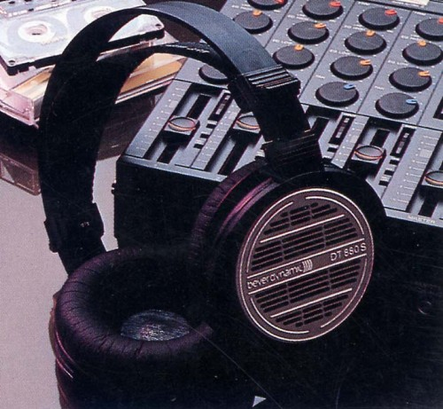

DT-880Studio

■価格 39,800円■型式 ダイナミック型セミオープンエアタイプ■振動板 ■インピーダンス ■再生周波数帯域 ■許容入力 ■感度 ■コード ■重量 ■発売 ■販売終了■備考 詳細不明 松田通商時代のカタログに記載現行のベイヤーの通常モデルとプロモデルは、側圧・デザイン等によるバリエーションだが、この時代のDT-880は80年代初頭のドライバーを使用していたので、周波数帯域や感度が違う可能性がある。
ベイヤーのインデックスへ